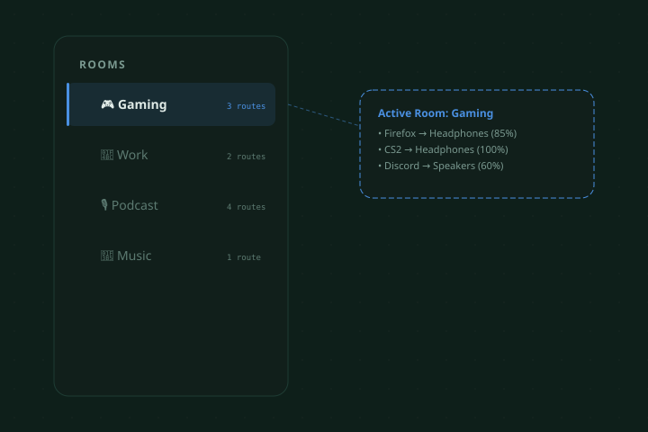
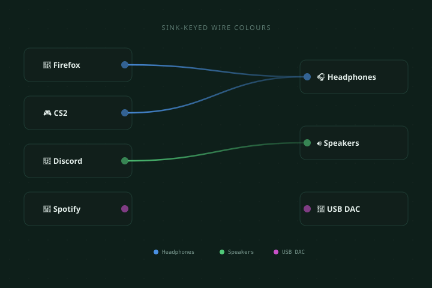
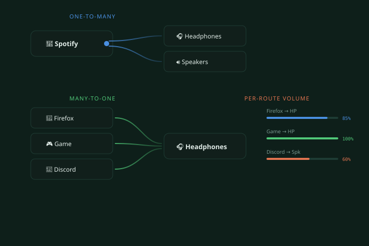
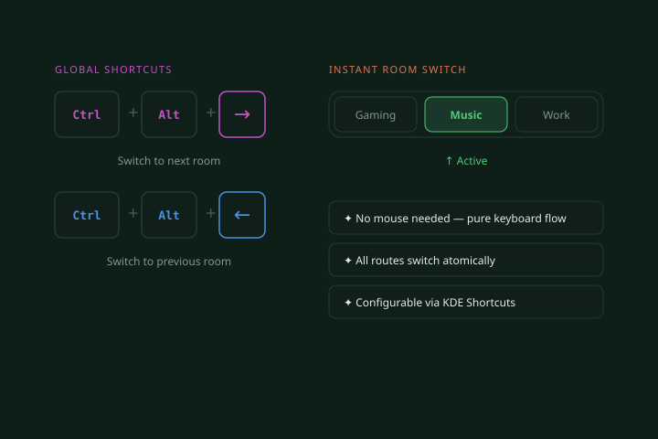

Full feature reference
Everything from the big ideas to the small details that make daily use feel effortless.
01 — Audio Rooms
Each room stores its own complete routing configuration — which apps go to which outputs, at what volume, in what order. Switching a room is atomic: all routes change at once, instantly.


02 — Visual Wire Routing
A canvas of source nodes (apps) on the left and sink nodes (devices) on the right, connected by colour-coded bezier wires. Each output device gets a unique colour so you instantly know where every app is routed.
03 — Many-to-Many Routing
Route one app to multiple outputs, multiple apps to one output, or build any N:M graph you need. PipeWire handles the mixing; SoundRoot handles the configuration.


04 — Global Shortcuts
Three configurable shortcuts live in KDE's native Keyboard Shortcuts panel: open the widget, next room, and previous room. They work globally — in games, full-screen apps, wherever.
(fully rebindable in System Settings → Shortcuts)
05 — PipeWire Native
SoundRoot talks to PipeWire via the PulseAudio compatibility layer for maximum device support while using PipeWire's own virtual-sink loopback links for low-latency multi-output. No wrappers, no scripts.
Auto-discovery
All PipeWire sinks and source outputs appear automatically — plug in a USB DAC and it shows up instantly.
Live stream names
App names, icons, and stream metadata come straight from PipeWire — no custom labelling needed.
PA-compatible
Works alongside pavucontrol and any other PulseAudio-protocol tool — no conflicts.